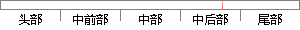

删除任务首先把任务挂起，并把延时时间设为0，避免被调度。
片段位置图

相似结果
相似片段：表3.1功能列表功能 说明任务管理 任务的创建、删除...挂起、恢复、修改优先级时间管理 任务延时、获得系统...抢占式调度机制,提高系统实时性; 7.多任务,UC/OS...
| 标题 | 《嵌入式远程监控系统的关键技术研究》 |
| 对比库 | 中国学位论文全文数据库 |
| 作者 | 王忠凯 |
| 机构 | 山东理工大学 |
| 分类 | 计算机应用技术 |
| 年份 | 2009 |
| 相似率 | 63.64% （轻度抄袭） |
※ 片段修改建议 ※
近似词参考：- 调度：调剂 调理
- 任务：使命 义务
- 避免：制止 防止
- 时间：时候
系统自动生成语句：删除使命首先把使命挂起，并把延时时候设为0，制止被调剂。
注：本片段修改建议为系统自动生成，仅供参考。